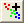

最終更新: 2018/07/06
Origin2017以降を利用中ならば、Data Highlighter Appをお使いください。このアプリは、Origin File Exchangeからワークスペースにインストールして使います。Origin2018では、F10キーでアプリセンターダイアログを開きます。このアプリセンターでアプリを検索し、インストールしてください。
Data Highlighterを使用するには、2D散布図を選択します。グラフをアクティブにして、アプリギャラリーのウィンドウでData Highlighterを選択します。
データプロット色に応じた情報が入力された列（この列を塗り色列とします）が、データプロットと同じワークシート上にあれば、色を塗り色列の値でインデックス/マッピングします（チュートリアル）。
塗り色を制御する列がない場合、データをグラフ化し、色を付ける領域を指定します。これは、ガジェット：クラスター操作...のガジェットで行います。まずすべてのデータをグループ化します。それから、カテゴリの作成ボタン 
クラスターガジェットの使用についての詳細情報は、このチュートリアルを参照してください。
必要なOriginのバージョン: 2016 SR0以降
キーワード:色, 領域, 範囲, ハイライト, データグループ化, 識別データ